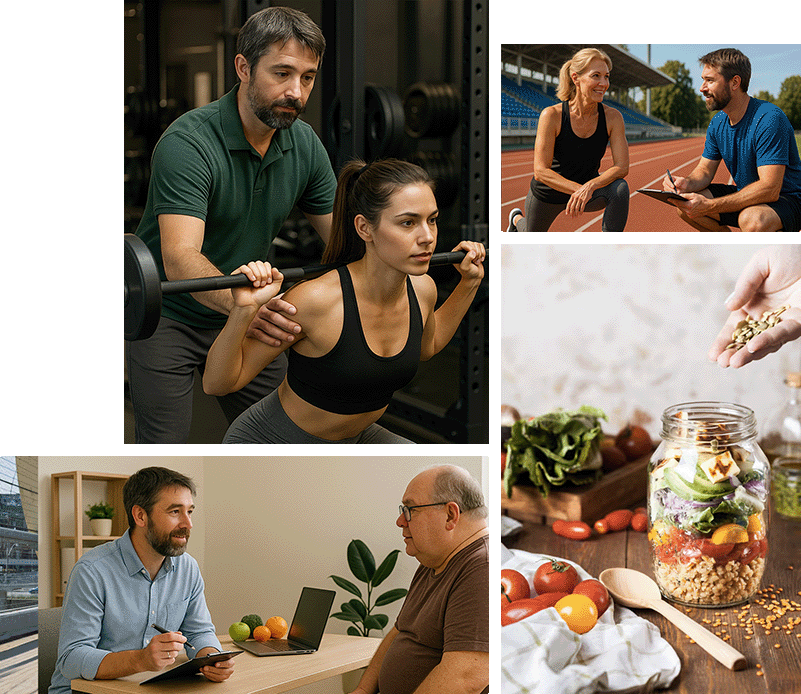
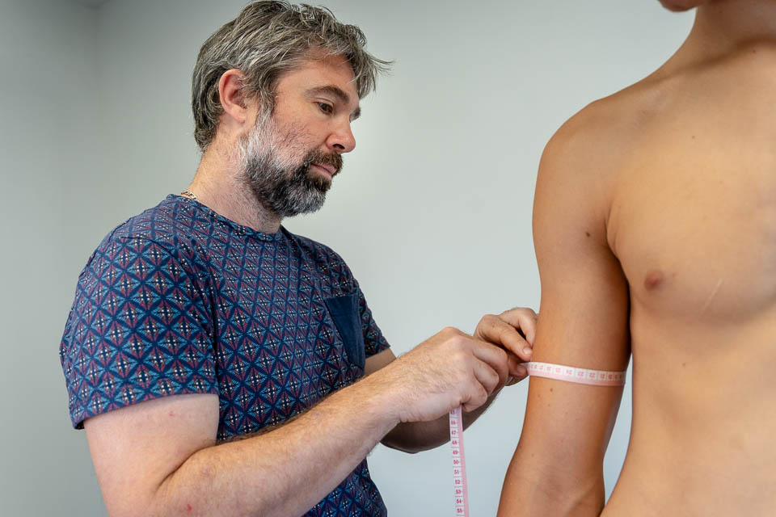

Fabien Lageyre
Diététicien - Nutritionniste
Landes (40)
Diététicien-nutritionniste, j’allie nutrition et activité physique pour vous proposer un accompagnement personnalisé, adapté à vos objectifs et à votre mode de vie.


Diététique générale

Diététique thérapeutique

Alimentation du sportif

Ateliers éducatifs

Diététique de collectivité

Entraînement sportif

Suivi personnalisé
J’écoute attentivement vos habitudes, vos contraintes et votre positionnement pour construire un accompagnement qui vous ressemble. Mon objectif est de vous accompagner vers l'autonomie à partir de contenus solides et durables. Ensemble, nous mettons en place un programme nutritionnel et/ou sportif personnalisé, adapté à votre mode de vie. Devenez acteur de votre prise en charge et progressez à votre rythme, sans frustration ni pression inutile.
Double expertise
En tant que diététicien-nutritionniste et éducateur sportif, je vous offre une prise en charge globale. Que votre objectif soit la perte de poids, l’optimisation de vos performances ou l'amélioration de votre santé, je mobilise mes compétences croisées pour vous proposer des solutions adaptées.
Résultats durables
Mon objectif est de vous aider à construire de nouvelles habitudes durables. Grâce à un suivi régulier, des outils d’évaluation et des conseils pratiques, vous devenez acteur de votre santé pour maintenir vos progrès sur le long terme.


Vos questions les plus fréquentes
Comment se déroule une consultation avec un diététicien ?
Lors de la première consultation, nous faisons un bilan complet de votre alimentation, de votre mode de vie et de vos objectifs. Ensuite, nous élaborons un programme personnalisé adapté à vos besoins.
Proposez-vous des plans alimentaires personnalisés ?
Oui, chaque plan alimentaire est conçu sur mesure en fonction de vos objectifs (perte de poids, prise de masse, bien-être digestif, etc.), de vos préférences et de vos contraintes.
Dois-je suivre un régime strict ?
Non, l’objectif n’est pas de vous imposer un régime restrictif, mais de vous aider à adopter une alimentation équilibrée et durable qui correspond à votre mode de vie.
Comment intégrer l’activité physique à mon programme nutritionnel ?
Nous élaborons ensemble une routine sportive adaptée à votre niveau et à vos objectifs, en complément de votre programme nutritionnel pour des résultats optimaux.
Les consultations sont-elles adaptées aux sportifs ?
Oui, nous proposons des suivis spécifiques pour les sportifs, qu’ils soient amateurs ou professionnels, afin d’optimiser leur alimentation en fonction de leurs performances et de leur récupération.
Offrez-vous un suivi après la consultation ?
Oui, un suivi régulier est proposé pour ajuster votre programme en fonction de vos progrès et vous accompagner sur le long terme.
